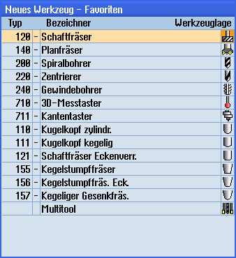
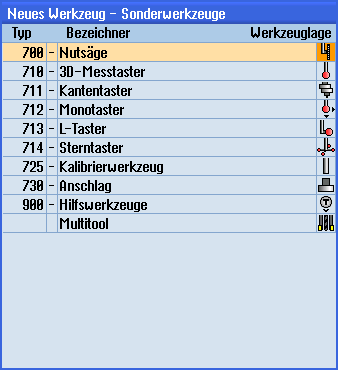
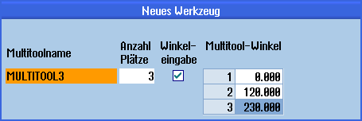

Das Multitool kann in der Favoritenauswahl sowie in der Liste der Sonderwerkzeugtypen ausgewählt werden.

Favoritenliste mit Multitool

Auswahlliste für Sonderwerkzeuge mit Multitool
| Hinweis |
Der Multitool-Winkel wird hinsichtlich der Funktion "Drehen auf der Fräsmaschine" nicht berücksichtigt. Die Verdrehung muss für diese Funktion über den Einspannwinkel realisiert werden. |
Vorgehensweise
 | 1. | Die Werkzeugliste ist geöffnet. |
| | 2. | Positionieren Sie den Cursor an die Position, an der das Werkzeug angelegt werden soll. Sie können dabei einen leeren Magazinplatz oder auch den NC-Werkzeugspeicher außerhalb des Magazins wählen. Im Bereich des NC-Werkzeugspeichers können Sie den Cursor auch auf ein vorhandenes Werkzeug setzen. Die Daten des angezeigten Werkzeugs werden nicht überschrieben. |
 | 3. | Drücken Sie den Softkey "Neues Werkzeug". |
| | | Das Fenster "Neues Werkzeug – Favoriten" wird geöffnet. |
| | | - ODER - |
 | | Drücken Sie den Softkey "Sonderw. 700-900". |
 | 4. | Wählen Sie das Multitool und drücken Sie den Softkey "OK". Das Fenster "Neues Werkzeug" wird geöffnet. |
 | 5. | Geben Sie den Namen des Multitools ein und legen Sie die Anzahl der Multitoolplätze fest. Wenn Sie den Abstand der Werkzeuge über den Winkel festlegen möchten, aktivieren Sie das Kontrollkästchen "Winkeleingabe" und geben Sie für jeden Multitoolplatz den Abstand zum Referenzplatz als Winkelwert ein. |
| | |  |
| | | Das Multitool wird in der Werkzeugliste angelegt. |
| Hinweis |
Der Ablauf des Werkzeuganlegens kann anders eingestellt sein. |
 | Maschinenhersteller Beachten Sie hierzu bitte die Angaben des Maschinenherstellers. |